Pular para o formulário

SAC
V
Sistema de Automação de Cargas Vagas
Acesso restrito à GELOT
Entre com sua conta institucional.
Usuário ou senha incorretos. Tente de novo.
Usuário
Senha
Esqueci minha senha
Entrar
Problemas de acesso?
Fale com a equipe de TI.
Voltar ao início